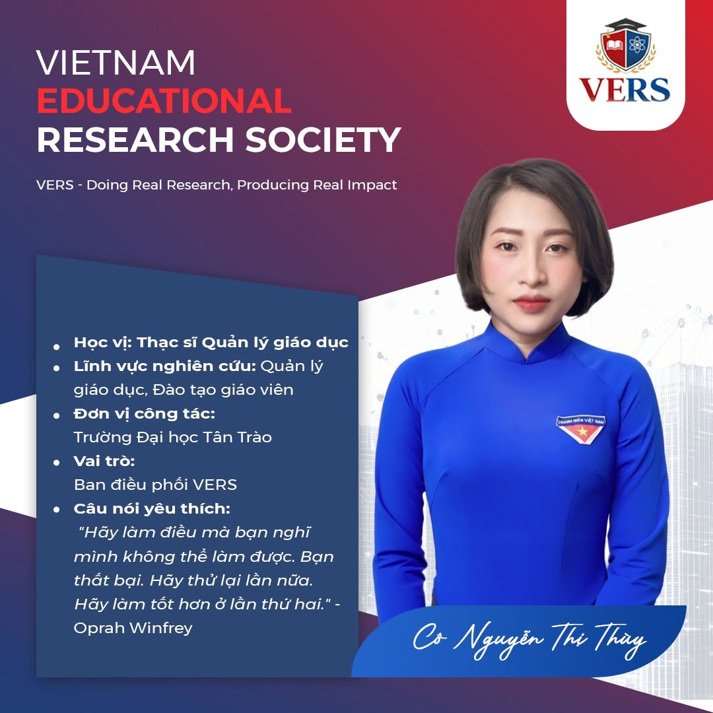
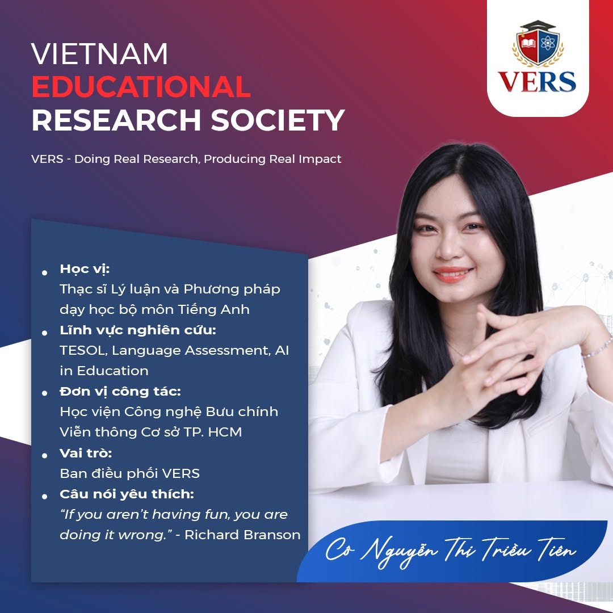

Sứ mệnh
Hỗ trợ người học và nhà nghiên cứu phát triển năng lực dựa trên thực hành, bằng chứng và phản hồi.
Khám phá →Vietnam Educational Research Society — cộng đồng học tập, chia sẻ và phát triển năng lực nghiên cứu khoa học.
Hướng dẫn và thông tin dành cho thành viên; nội dung thí điểm được phân biệt với chương trình đã hoạt động.
Hỗ trợ người học và nhà nghiên cứu phát triển năng lực dựa trên thực hành, bằng chứng và phản hồi.
Khám phá →Liêm chính học thuật, hợp tác, minh bạch, tôn trọng chuyên môn của cộng sự và học tập suốt đời.
VERS Community, VERS Academy, Research Passport và hướng hợp tác VERS-RDP.
Điều phối nhóm: TS. Đặng Minh Tuấn — Trường Đại học Giáo dục, ĐHQGHN. Email: tuandang@vnu.edu.vn
Đăng ký thành viên miễn phí để kết nối nhà nghiên cứu, chia sẻ hướng quan tâm và tìm cơ hội ghép nhóm theo lĩnh vực, năng lực bổ sung và mức độ cam kết.
VERS · PEOPLE
Thông tin được tổng hợp theo bảy poster Ban điều phối do VERS cung cấp. Lĩnh vực nghiên cứu và đơn vị công tác phản ánh thông tin trên poster, có thể thay đổi theo thời gian.

Trưởng ban điều phối
Học vị và đơn vị: Tiến sĩ Lý luận, Phương pháp và Công nghệ dạy học; Trường Đại học Giáo dục, ĐHQGHN
Lĩnh vực nghiên cứu: Giáo dục Toán, STEM, Vật lý, đào tạo giáo viên, chân dung người học và AI trong giáo dục

Phụ trách vận hành · Ban điều phối
Học vị và đơn vị: Thạc sĩ Triết học; Trường Cao đẳng Cơ điện Hà Nội
Lĩnh vực nghiên cứu: TESOL, đánh giá ngôn ngữ, healing learning và AI trong giáo dục

Ban điều phối
Học vị và đơn vị: Sinh viên Sư phạm Khoa học tự nhiên; Trường Đại học Sư phạm TP.HCM
Lĩnh vực nghiên cứu: Công nghệ trong giáo dục khoa học và dạy học trò chơi hóa

Ban điều phối
Học vị và đơn vị: Thạc sĩ Quản lý giáo dục; Trường Đại học Tân Trào
Lĩnh vực nghiên cứu: Quản lý giáo dục và đào tạo giáo viên

Ban điều phối
Học vị và đơn vị: Thạc sĩ Giáo dục học; nguyên giảng viên tại Trường Đại học Hoa Sen và Trường Đại học KHXH&NV, ĐHQG-HCM
Lĩnh vực nghiên cứu: Meaningful learning, curriculum innovation, culturally sensitive pedagogy

Ban điều phối
Học vị và đơn vị: Thạc sĩ, nghiên cứu sinh tiến sĩ Lý luận và Phương pháp dạy học môn Toán; Trường Đại học Hùng Vương
Lĩnh vực nghiên cứu: Giáo dục Toán học, công nghệ giáo dục, STEM và hoạt động trải nghiệm

Ban điều phối
Học vị và đơn vị: Thạc sĩ Lý luận và Phương pháp dạy học bộ môn Tiếng Anh; Học viện Công nghệ Bưu chính Viễn thông, Cơ sở TP.HCM
Lĩnh vực nghiên cứu: TESOL, đánh giá ngôn ngữ, AI trong giáo dục